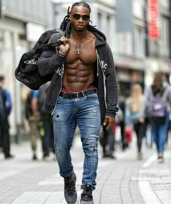
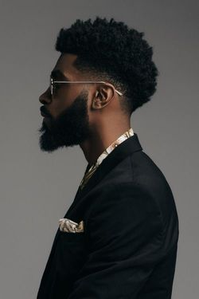

General Information
"So you wish to know me better?"
Full Name:
» Shenron AlexanderAliases:
» Shen | AlexAge & Birthdate:
» Age: 20 » Bd: 9th/ 12th/ 2000Sexuality & Inclination :
» HeterosexualGender & Sex:
» Male/ he,him,hisNationality & Ethnicity:
» American » African AmericanDivine Parent :
» Titan God AtlasOther:
» Birth Place: LouisianaPersonality :
» Shenron Alexander, is a man of commitment. If he devotes himself to a person, cause or movement then he will live, sleep and breath this.
His softer side is deeply influenced by his mother’s affection and attention to detail. He is patient, observing and mindful of others. Often he will place himself in another’s position to better understand them, and he doesn’t dodge opportunities to get to know others making him sociable.
On the other hand, his anger and all emotions that follow are very heavily influenced by his father’s blood. The sense of supremacy, domination and control lead him to be almost blinded to his real limitations, and will even attempt to prove these unrealistic, self imposed expectations regardless of the repercussions. Because of this Shenron is easily provoked and angered, and will take very risky or dangerous actions BUT only when on his own, these notions are 9/10 curved and controlled when there are others he must protect. Hence, Shenron will almost never place himself and his need above others.
His softer side is deeply influenced by his mother’s affection and attention to detail. He is patient, observing and mindful of others. Often he will place himself in another’s position to better understand them, and he doesn’t dodge opportunities to get to know others making him sociable.
On the other hand, his anger and all emotions that follow are very heavily influenced by his father’s blood. The sense of supremacy, domination and control lead him to be almost blinded to his real limitations, and will even attempt to prove these unrealistic, self imposed expectations regardless of the repercussions. Because of this Shenron is easily provoked and angered, and will take very risky or dangerous actions BUT only when on his own, these notions are 9/10 curved and controlled when there are others he must protect. Hence, Shenron will almost never place himself and his need above others.
Weaknesses :
» Shenron has an overwhelming Ego.» Shenron is easily trusting of others, due to his want to help.
» Shenron is very easily angered, via threats to others.
Strengths:
» Shenron has great mental strength and confidence.»Shenron has a high level of people iq, being able to talk people down.
» Shenron is very committed, rarely being swayed against his morals.
Likes:
» People who make excuses for why they cannot do something.» Girls that are irrationally submissive and wont challenge him.
» Guys who think they are tough shit, without first proving their stripes.
Dislikes:
» People who don’t stay true to their beliefs, morals and ideals.» Girls that are independent.
» Guys who are honest, even if blunt.
Habits:
» Waking up early everyday, and working out: Since his days as a college football player, getting up at 4am was part of the daily routine so he’s never dropped this habit..» Water: He doesn’t drink any other drinks, not even juice. Hence he’s often very hydrated but there is one exception. Root Beer and Doctor Pepper are Godlike drinks..
» Helpful: Shenron has an inability to say no to assisting others, unless it goes against his morals. Shenron often finds himself doing some kind of favour for various people, hence carrying more responsibility than he can honestly handle. .
.
Hobies:
» MMA: Due to attempting many sports, Shenron finally arrived at MMA despite his mother’s worries, eventually falling in love with the art of combat. Often found training, repeating the same moves tirelessly until perfection.» Mountain Climbing: There has always been a peace found in reaching higher and higher for Shenron. Especially at night, the practice of climbing to touch the stars entice him on a spiritual level..
» Star Gazing: Simply, the practice of observation, patient and deliberate. It calms, it nourishes and it’s the closest shenron can get, to his own father..
Relationships:
»Shenron’s relationships extend far and wide. Women have always come easy though, often lustful and lacking true, pure, intimacy.
The most important was his mother. Honest, Vulnerable and loving. His mother was the most influential figure in his life, second only to his distant father.
His other relationships extend to various short romances and more importantly, the teams he would play along with over the years that taught him the concept of brotherhood. Family who are not blood related.
Fears:
» Gore: Due to the brutality of his mother's death, scenes of brutal death often cause him to hurl. Though, the fear stems from not wanting to see those close to him, in such a state.» Hurting Others: Due to his Titan Origin, Shenron fears that his aura will attract a Monster/Beast that would cause harm to another. Similarly, stems from his trauma due to his mother's death.
» Father: A great deal of Shenron’s motivation, stems from the need to make his father proud. The fear of failing to do so is a result of this.
Back Story :
Goodbye:
“Come come come, I know tonight’s the last night, so let me tell you about myself..”In the cover of night, a world covering shadow sprinkled with stars, with only the soft moon to break up the neverending dark. Bodies danced and skipped around an abundant hearth that blazed and spurted soft kindlings that stung if they fell on your skin. These figures were mortal, smaller than the Man who spoke and the perfect depictions of youth, children and some teenagers. The little people listened and followed the instructions of the deep voiced man, who already sat by the fire. On a large, oak trunk that lay on the floor for anyone’s comfort, was a titan child.
“OK, children settle, settle, listen. YOU ALL have been under my protection for the last year.. We have been through a lot and you .. have been through a lot. But we have gotten this far..”
Some of the smaller ones had already begun to ball. This was a sad night, the stars dimmed and the Titan Son felt it. The teenagers did their best to comfort the young, but even they themselves found pain in the ordeal, of seeing their protector and guide leave them, a feeling comparable to the loss of a parent. Perhaps , most accurate, as this Titan Child was a parent to these children since He alone has impacted their lives, molded their opinions, clothed, sheltered and raised them over the last year. But now, the adults have arrived, they have deemed a MetaHuman incapable of raising 10 children on his own. The adults believe they can survive, protect and raise these 10 children, without the aid of a MetaHuman, because MetaHumans are monsters.
“PLEASE..PLEASE ..Don’t leave us..” A young boy, only six years old, he looked nearly the same as his 5 year old counterpart. Tugged on the Great Mans Cargo Pants “I want to be like you.. I WANT TO GROW UP AND BE LIKE YOU!” The boy began to cry, and the large man raised the boy up, placing him on his lap. And comforted the boy, who clutched at his shirt and cried into his chest
“It’s ok Brody, you will grow up and be a great man. I know you will!” He soothed the boy, how best he could. And returned his focus to the group, never did he falter, his face always with a smile he remained stoic in front of the crying children.
“Listen now, stop crying and hear my story. I’ll tell you of my life, so that you can better decide, if you wish to forget or live up to my name. Shenron Alexander, A MetaHuman yes.. Son of Atlas!”
HIS LAUGHTER BOOMED, as his aura rushed over the mortals, settling their fears and calming their woes. Now he began his story.. Starting on the first day, birth*
Birth:
9th/12th/2000 It was an inexplicably warm night in Louisiana, a fact that greatly comforted Vannesa Alexander when she gave birth. Shenron’s father wasn’t there to see his birth, or rather he wasn’t there in physical form. Instead watching from the stars that made up the sagittarius constellation. His mother cried due to feeling abandonment, but her son slept seamlessly as if comforted by the night, the stars and the moon.Shenron was comparatively large even at birth, an indication of his future size. Not only this, he was much heavier than any of the babies that had been born in this hospital at least. Other than this, he was relatively normal, and grew up like any other mortal boy without any deficiencies. His mother felt very blessed by this, having a healthy boy was all she had ever wanted. But now she wanted something else, to see the man she had fallen in love with. The man, who’s eyes transported her to another reality, one where she was warm, safe and loved endlessly.
But this would never happen, and Vannesa Alexander would never recover. Still, she gave her only boy all the love she could not pour on to her lost lover. Hence the traits of a caring and attentive mother were passed down to Shenron giving him a very warm and welcoming atmosphere when he was in a nurturing mood. But, his father’s blood also played a large role, as even through his absence, his appeals were shifted in a direction his mother could not understand. As if the father of Shenron spoke and encouraged him to do things, via bloodline.
Youth:
9th/12th/2010 As Shenron aged, he grew exponentially. Surpassing his mother who was 5’9”, he would eventually reach 6’5” 210lbs and how he lived his life played a pivotal role in this physical development. When Shenron was introduced to the world of sports, he could feel the blood in his body seething and boiling. There was something he loved that went beyond just a competitive drive. And that feeling, was the notion of utter Domination, such overwhelming supremacy that could be felt as he controlled the outcome of a game.
Most if not all of Shenron’s life was spent in the world of sports. It was something beyond an addiction, it was a life purpose. He played Football, then literally outgrew it and was called upon to play American Football of which his name “Shenron” was realised with his nickname of “God Dragon” for his inhuman strength and durability. Finally though, He came to admire and love MMA because it was one of the few sports that allowed for the outcome of a battle to be entirely in your own hands. Not only this, but the fighters in this league, were some of the only Mortal’s that could beat him in combat and this, DROVE Shenron to want to learn and master the multitude of martial arts.
If there is one word to sum up the youth of this Titan Child, it’s Consistency. When there was a plan in motion, a schedule to follow, a diet plan, a work out routine etc. There was no room for complaint, there was only do or don’t and this was the ultimatum to how he became so strong, durable and mentally strong.
But.. Nothing could have prepared him for the loss of a parent. His only parent.
Mature:
9th/12th/2017 It was more painful than any punch, kick, training session, broken bone, ruptured muscle.. Stab, bullet, Monster or God.
He was 17 when she passed away, it was a road tragedy crash, an accident that Shenron will forever blame himself for. The two of them had been in a bus going cross state, it was nearing his mother’s birthday and she wanted to spend it with her parents. It was nearing midnight, when Shenron felt a sudden rush that awoke him. His heart beat rapidly, as if he had just ran a marathon, his eyes darted as he noticed that he was on the street.. The bus he had been in.. was utterly trashed, destroyed and he could see that the two halves lay on the mountain road, the front ahead and the back of the bus, behind him. Somehow, he had slept through a full crash while not receiving any bodily harm.
He got up immediately, and ran to the front of the bus as he sprinted past lifeless bodies. He has never seen such carnage, blood.. Death. It was a horrifying sight that he could not stop himself from committing to memory. He searched through corpses to find his mother, hoping that he wouldn't and then in the corner of his eye he saw movement. This movement washed a new wave of hysteria, the same sudden blood rush that had woken him up. From behind the bus stepped out on all fours, what Shenron could only describe as a bear with swords, bones and daggers stabbed into it back. He didn’t understand what it was, but it seemed to propel an aura that made him.. Quiver. Shaking, Shenron thought to run, but before he could turn face, he saw his mother’s corpse in the creature's mouth.. As it was bit and ripped in half.
Burden:
9th/12th/2017 Seeing his mother's torso fall lifeless through the air and splatter on to the floor removed a burden from Shenron’s shoulders. This was a fight, and he did not need to be human to do it. He removed and stripped away his moral as his feet moved on their own. His eyes gazed at the Creature that had killed his mother. His aura was one that could not be rivalled.
Leaving behind the imprints of his boots, and the ground did not shake, nor was a sound made, the wind stopped blowing and all creatures halted in the presence of a Son of Atlas. But this monster was not of this world, it was the only explanation for why it was able to move despite the great presence that lay in front of it. As if breaking free from chains of the mind, the creature found within itself the ability to run. As far away as it could, or better said, as far away as Shenron would allow it. A chase would take place through the mountain forests, as Shenron pursued the creature. Under the night sky, a 6th sense allowed him to never lose sight of the Monster. He never tired, he never wavered and then the Monster turned in the center of a clearing to face the Titan Son.
Shenron controlled himself but did not stop. He walked, step after step towards the beast.
“You must be a fool to even face me.. I don’t know what you are.. But you’re nothing compared to it”
There was no need to fear, Shenron knew this as his body vibrated with monstrous power and strength. All he did was walk, step after step. The monster stood frozen in place, and then the Titan Son placed a hand on it’s head, extending his arm high into the night sky, to reach the Monster he perhaps stood 7 almost 8feet high. And then it was over, breathing in, and flexing what seemed to be every muscle in his body, Shenron began to crouch low and his hand followed as it deformed the monster's body completely. Appearing to have been cut in half from the head down, one can’t imagine that this was done with simply a hand. The bear’s head, pushed via force into its own rib cage and further breaking it’s ribs through to it’s torso, breaking it’s spine and inevitably ripping through and between it’s legs. Shenron’s arm was covered in the monster's blood, as he felt it.. The other presence that had been in the forest. A far stronger aura came from it.
This beast stepped into the clearing and it was yet another of these abyssal bears. With swords, bones and more weapons protruding from it’s back. But this “bear” was nearly double the last ones, it was so big that a massive man like Shenron had to look up to properly see its entirety. It’s Aura far surpassed his own and Shenron understood that there was no way he could beat this Monster.
But still, he did not waver. He had to fight, because he had to be the one to return to his mother's side, bury her, tell her parents. He had a commitment, he had a duty, after all that his mother had been through, as a single parent, as a pained lover and as a human seeking purpose. This was the least that he could do for his mother, his only parent. Or so he thought..
The sky, the night, the stars, the moon seemed to disappear. And it it’s place large, great obelisks of light watched from the night sky and then a voice, spoken from the depths of the earth whispered louder than any scream.
“Carry, my weight”
AND THEN THE SKY FELL
Shenron held it, raised it and felt it. It was like nothing he has ever experienced, 1 second past and he was already too tired to think, 2 seconds past and he was struggling on his knees, 3 seconds past and he was on the floor holding it with the remaining trickling energy that faded. And then it was gone, after experiencing such magnitude, Shenron stood and felt.. Weightless.
The beast was completely destroyed, splattered and pressed into the earth.
“You, Shenron of Atlas.. I claim you as my son”
End:
9th/12th/2020
In the end, what is a boy to do. With no physical parent, he would follow the stars and allow his father to guide him on a long long journey west. On the way, the world would have met its demise but thanks to the warnings from his father, he was able to stay safe through most of the natural disasters.
Not only this, but he was able to save and protect many young children who similarly had lost everything. Left with no one to guide them, he took up the responsibility and eventually his burden grew to contain the lives of 10 children who he treated like his own. A year passed with them, but few monsters attacked. Most if not all, he was forced to face, but they were weak and posed little harm. Regardless he kept taking the young west, finding some his own age who lessened the burden greatly. Over the years, these adults also learned a truth, that even MetaHumans are human. But regardless this would not stop the adults, who they met once entering texas. These men and women would look at the large man in disgust and make assumptions of the things he had done with the children. Eventually ripped away from them, he would leave his hitchhiker family and continue, until he found Camp Elpízo and joined them.
Apperance
"Keep your eyes at eye level please~"
Physical Description :
»Shenron is an imposing figure, understandable due to his massive height, Muscular physique, and star glow, yellow eyes. From top to bottom:
Shenron sports a messy floof, deep black that he wishes he could take better care of. His eyes again are yellow, bright and energetic. He has little to no facial hair, often preferring to shave it but due to the ..world ending this became an afterthought. Hence he has a full beard, of similar black tone.
Shenron has a dark skin tone, a gift from his mother’s african american heritage and ancestry. He also has a tall figure, his mother believes this is a genetic throwback of sorts or simply his father’s genes. Due to training, for many years, Shenron is very muscular, at first he was more bulky due to American Football requesting this, but due to his recent escapades in MMA, he is much leaner.
He has no tattoos, or piercings due to personal dislike for them.
Shenron sports a messy floof, deep black that he wishes he could take better care of. His eyes again are yellow, bright and energetic. He has little to no facial hair, often preferring to shave it but due to the ..world ending this became an afterthought. Hence he has a full beard, of similar black tone.
Shenron has a dark skin tone, a gift from his mother’s african american heritage and ancestry. He also has a tall figure, his mother believes this is a genetic throwback of sorts or simply his father’s genes. Due to training, for many years, Shenron is very muscular, at first he was more bulky due to American Football requesting this, but due to his recent escapades in MMA, he is much leaner.
He has no tattoos, or piercings due to personal dislike for them.
Height and Weight :
» 6'5" | 220lbsUsually Warn Attire :

